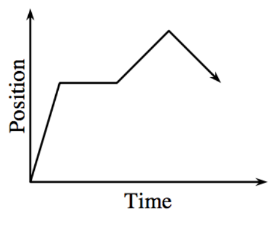

Use the definition of instantaneous rate of change to show that the equation of the tangent line to the curve \(y=12\sqrt{x}\) at the point \((4,24)\) is \(y=3x+12\).
A car which runs very slowly in the morning travels at a speed of \(2t\) ft/s in the first \(t\) seconds after it starts for \(0\le t\le50\).
Sketch a velocity (ft/s) graph according to the following function:
\[ v(t)= \begin{cases} 2t & \text{for } 0 \le t \le 10 \\ -2t+60 & \text{for } 20 \le t \le 30 \end{cases} \]
Sketch velocity and position graphs for the following scenario:
Walk forward for \(4\) seconds, gradually increasing your speed. Stop for \(1\) second. Walk slowly towards start for \(5\) seconds. Stop for \(10\) seconds. Run towards the finish for \(10\) seconds.
Sketch the corresponding velocity graph given the position graph.

Evaluate the following limits.
Given \(h(x)=2x^2-1\), approximate the area under the curve for \(1\le x\le3\) using five trapezoids.
Simplify: \(\frac{\frac{1}{2+h}-\frac{1}{2}}{h}\)